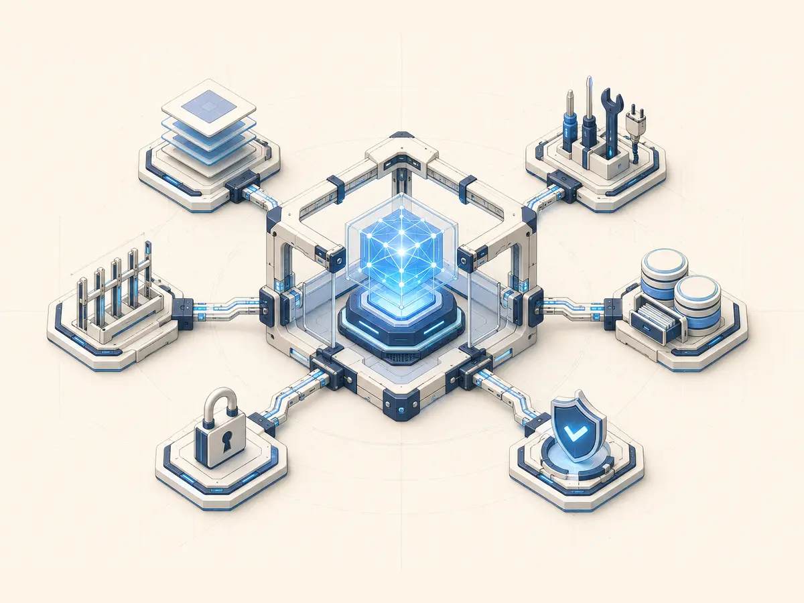
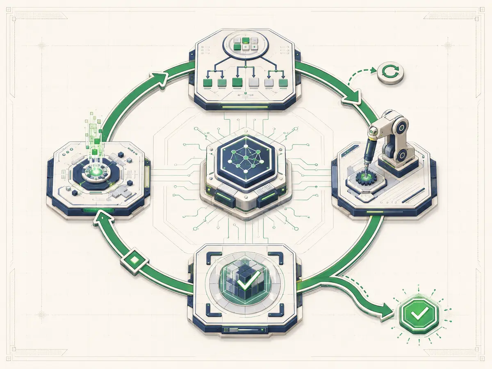
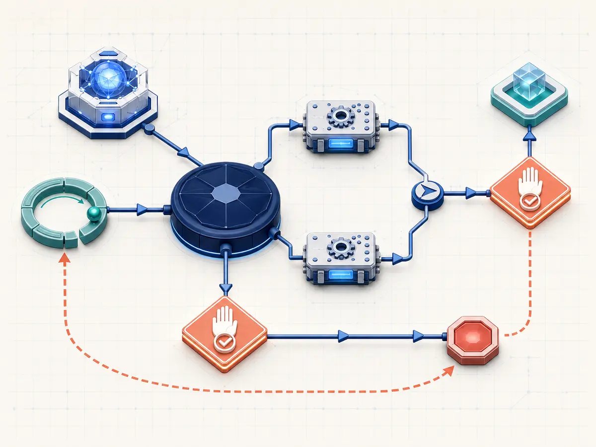

01
HARNESS

environment = constraints + tools + feedbackAGENT SYSTEMS FIELD GUIDE · 2026
From harness engineering to loop engineering and graph engineering

environment = constraints + tools + feedback
while (!done) plan → act → verify
nodes + edges + state + policyEXECUTIVE SUMMARY
Models act inside a harness, loops repeat that action over time, and graphs structure the relationships among loops, people, and deterministic code. Autonomy is constrained more directly by verifiability than by model intelligence.
These are not competing buzzwords. They identify distinct layers of an agent system.
Agent engineering has moved beyond prompt and context engineering toward three related ideas: harness engineering, loop engineering, and graph engineering. The harness defines the world in which an agent works. The loop defines how work continues over time. The graph defines relationships among execution units and states.
Design context, tools, permissions, memory, sandboxes, verification, and observability so a model can work reliably.
Repeat execution against a goal, evidence, and stopping conditions instead of relying on a human to type every next prompt.
Coordinate agents, loops, deterministic procedures, and human approvals through explicit nodes, paths, and shared state.
A model acts inside a harness; a loop repeats that action; a graph structures relationships among those repetitions.
A harness is more than a prompt wrapper. It includes files, terminals, search, browsers, external APIs, approvals, context compression, recovery, testing, and cost limits—the full interface between a model and the world.
model intelligence × harness quality × task verifiability
= dependable agent performanceA loop starts from a trigger, reads state, selects the next task, executes an agent, verifies the result, records state, and chooses success, wait, retry, or escalation.
Graphs matter when order must be guaranteed, parallel work must join, or actors with different permissions and verification methods must be separated. Not every node should use an LLM: code should handle deterministic checks while models handle ambiguity and novel strategy.
Higher abstractions do not remove prompts; they move prompts inside a larger execution system.
Early practice focused on roles, examples, output formats, and reasoning instructions. These remain useful, but failures in agents that edit files and use tools for hours cannot be explained by prompts alone.
Instead of stuffing every rule into one giant file, use a short map, structured documentation, searchable history, and executable plans. Context is a core part of the harness, not the whole of it.
OpenAI's Codex-based product experiment showed engineering work moving from directly writing code toward building agent-readable repositories, verifiable requirements, structural tests, and custom linters.
Do not merely ask the model to try harder. Build an environment in which it can succeed.
As coding agents became capable of longer work, people repeatedly typing “continue,” “test it,” and “check again” became the bottleneck. A loop combines goals, evidence, budgets, stopping conditions, and external state.
Once exploration reveals stable procedures and boundaries, order, parallelism, approval, and recovery can be promoted into a graph. A graph is not a cage for creativity; it is the safety boundary that permits creative judgment.
Different speakers use different labels, but all bring environment, repetition, and external state into the engineering problem.
Harness, loop, and graph engineering were not defined together in one standard. They converged as practitioners named bottlenecks observed in different environments. The useful question is not who coined a phrase first, but which failure each perspective is trying to remove.
| Perspective | Emphasis | Practical meaning |
|---|---|---|
| OpenAI / Codex | Agent legibility, repository knowledge, structural tests | Engineers increasingly design the conditions in which agents succeed |
| Anthropic | Long-running work, file-based state, context management | External checkpoints make long tasks recoverable across sessions |
| Addy Osmani | Automation, worktrees, skills, plugins, subagents | Move repetitive next actions into small operational loops |
| Lilian Weng | Planning, memory, tool use, failure modes | External state and feedback matter beyond conversational memory |
| LangChain / LangGraph | Explicit state, nodes, edges, persistence, observation | Represent branching, joins, recovery, and human approval as executable workflow |
| Microsoft | Smallest sufficient structure, deterministic procedure | Do not use an agent for a function or a workflow for a single-agent task |
The focus moves beyond answer quality to the information a model sees, tools it can use, state it can return to, evidence that proves completion, and boundaries where people intervene.
Plan–act–observe within one session is different from a system deciding when and how to start another session.
The model selects tools, observes results, and decides what to do next. It is bounded by context, tool errors, compaction, and its own completion judgment.
think → act → observe → reviseA controller reads goals, budgets, checkpoints, and verification results to rerun, wait, stop, or escalate.
trigger → run → verify → persist → decideA strong model and inner loop improve one session. Work that waits on CI, resumes tomorrow, or crosses repositories and issue states needs an outer loop.
Repetition cannot make an ambiguous goal objectively correct. An endless “keep improving” loop merely automates an undefined target. Write a completion contract and create machine-checkable evidence first.
A stronger model can do more with a thin harness, but it does not automatically create permissions, recovery, or verification.
As models improve, harnesses change rather than disappear. Compensatory prompt rules shrink while stable interfaces, permissions, external state, observation, and verification become more important.
Models differ in parallel tool calling, tendency to ask questions, tolerance for context compression, error recovery, and when they declare completion. One toolset and turn budget cannot be optimal for every model.
Autonomy is constrained more directly by verifiability than by raw model intelligence.
Software tools, sandboxing, planning, and verification are combined into one coherent work experience.
Codex's advantage is not only the model. Repository exploration, file editing, command execution, approval, planning, and verification are integrated so an agent can investigate, modify, and test in one workspace.
Best fit: repository-level features, bug fixes, refactors, build and test repair, review, and deployable software artifacts.
Its terminal-centered design makes it natural for users to combine hooks, commands, subagents, and external automation.
Claude Code stands out for long-context reasoning, terminal fluency, project instructions, and composable hooks. Users can combine shell tools, worktrees, CI, and issue trackers into their own loops.
Best fit: deep repository investigation, long coding tasks crossing design and implementation, terminal automation, and user-directed parallel work.
It resembles an open, long-running agent environment combining memory, skills, messaging, and automation more than a dedicated coding tool.
Hermes can combine different models, tools, skills, messaging channels, and persistent memory. It fits always-on personal or work agents, hybrid local/cloud portfolios, and scheduled or event-driven work.
Separate personal, work, coding, and shared-channel profiles. Use strong models for architecture and final review, and local models for search, organization, log analysis, and repetitive edits.
A single aggregate score hides the cause of failure. Evaluate model, harness, and task separately.
| Axis | Capabilities to separate |
|---|---|
| Model | Requirement interpretation · planning · code understanding · tool selection · diagnosis · long instruction retention · self-correction · completion judgment · uncertainty |
| Harness | Tool quality · sandbox · context · memory · recovery · parallelism · approvals · observability · cost control |
| Task | Verifiability · repetition · external access · failure cost · creativity · dependency count · required human approval |
An autonomous loop struggles with “create a great marketing strategy” even with the best model because success is subjective. A mid-tier model can automate lint repair, schema conversion, format normalization, API regression checks, and broken-link fixes because success is inspectable.
High software productivity through tight model–workspace integration
User-owned loops and teams centered on the terminal
Model independence, memory, skills, messaging, and automation
Start with the smallest structure and promote only observed repetition and responsibility boundaries.
One-off question · exploration · unformed requirement · continuous taste judgment · small edit · undefined verification
“Review the three largest risks in this design.”One repository · one agent holds the context · a few tool calls · immediate human review
“Reproduce this bug, make the smallest fix, and run related tests.”Repeated attempts · delayed signals · recurring next-task discovery · external state · objective done criteria
“Fix CI until it passes, but stop if a DB change is required.”Guaranteed order · parallel joins · separated permissions · human approval · typed recovery · multiple systems · audit history
analysis → security → implementation ∥ tests → approval → gradual deploy → verify/rollbackMost individuals get the best return from one strong agent, a verifiable repository, and a small loop.
Start with one strong agent. Keep project instructions short, provide test, lint, and build commands, require a plan before work and evidence after, and save only repeated procedures as skills. The highest leverage comes from a verifiable repository, not multiple agents.
Add small loops for issue investigation, test repair, dependency updates, and documentation. End with a reviewable pull request rather than automatic merge.
discover → change → test → independent review → PR → human approvalPrioritize repository knowledge, executable requirements, fast deterministic tests, architecture linters, observable runs, isolated workspaces, and issue/PR orchestration. Protect scarce human review bandwidth as agent throughput rises.
Reduce tools per profile, use task-specific skills, small work units, file-based plans, short loops, and mechanical verification. Let local models search and edit; reserve strong cloud models for architecture, hard failures, and final review.
Separate memory, tools, permissions, channels, skills, models, and retention for personal, work, coding, and shared-channel profiles. The key memory question is what not to store.
1. Agent Runtime — model, tools, context, permissions, session
2. Loop Controller — goals, budget, verification, wait, retry
3. Workflow Orchestrator — dependencies, parallelism, approval, recoveryThis layering preserves business state when models or harnesses change and allows small loops before graph adoption.
Good systems place completion contracts, evidence, state, and failure boundaries correctly.
Function → model call → single agent → loop → graph. Move upward only when the lower level is insufficient.
Specify result, verification, constraints, scope, and stop conditions.
Prefer tests, type checks, and execution evidence over another model saying it looks good.
IMPLEMENTED --test evidence--> VERIFIED
VERIFIED --human approval--> READY_TO_MERGEUse Git plans, JSON state, issues, checkpoint databases, test reports, and structured logs.
Split work when permissions, context, model cost, impact, verification, or workspace lifetime differ.
Code handles schemas and permissions; models handle ambiguity; people approve high-risk transitions.
Limit turns, time, tokens, cost, concurrency, retries, and changed files. Exhaustion is a normal terminal state.
Remove obsolete forced planning, prompt tricks, unnecessary subagents, and old tool descriptions.
Adding complexity is easy. Proving that it removes a real failure is the hard part.
Wastes context and accumulates stale, conflicting rules. Use a short map and structured detail.
while true: agent("keep improving") has no done condition and keeps spending.
Useful, but not a substitute for independent tests and external evidence.
Without real permission, tool, or verifier differences, it multiplies context and synthesis cost.
Explore first, observe repetition, then promote only stable boundaries.
Profiles should reflect differences in tool calling, questions, compression, and recovery.
Logs must answer where, why, how often, what changed, and whether cost improved quality.
You do not need every stage. Stages 2–3 deliver the best return for most individuals.
People do the work; the model explains and drafts. Learn strengths and limits.
Explore, edit, run commands; human reviews each run. Improve repository legibility.
Instructions, docs, sandbox, tests, permissions, observation. Stabilize repeated work.
Persistent goal, external state, budget, terminal states. Remove the repetitive “next.”
Clear nodes, deterministic branches, approval, recovery. Guarantee order and duty.
Task-specific models, profiles, parallel work, central state. Optimize cost, speed, quality.
Cluster failures, propose improvements, regress, apply after approval. Accumulate experience.
The best system is selectively autonomous, not universally autonomous.
Files, data, permissions, tools, networks, memory, safety, verification, people, and organizations remain as models improve. Temporary compensation rules shrink; stable interfaces and operating boundaries matter more.
Users will create work contracts defining trigger, goal, evidence, scope, cost, and stopping conditions. Prompts become components inside loops.
Graphs address audit state, separated responsibility and permissions, approvals, recovery, long runs, cost and concurrency, and multi-system integration.
clear rule → code decides
ambiguous problem → model judges
high-risk change → human approves
success → evidence decidesAs abstraction rises, human responsibility shifts from writing every result to designing a system that generates, verifies, and approves the right result.
The move from harness to loop to graph engineering is not a parade of new labels. It describes a shift from receiving good answers, to agents doing work, continuing work, coordinating with systems, and improving through experience.
Codex tightly integrates model and harness for high software productivity. Claude Code combines strong reasoning with terminal composability for user-designed loops and teams. Hermes combines model independence, persistent memory, skills, messaging, and automation for long-running open agency.
Instead of asking which agent is universally best, ask: Can this model understand the task? Does the harness create conditions for success? Is the goal verifiable? Is repetition necessary? Does a graph separate real responsibility? Can the system stop and recover safely?
Start with one strong agent and a simple harness. Add a loop when repetition is proven. Expand into a graph only when responsibility, permission, and failure boundaries truly diverge.